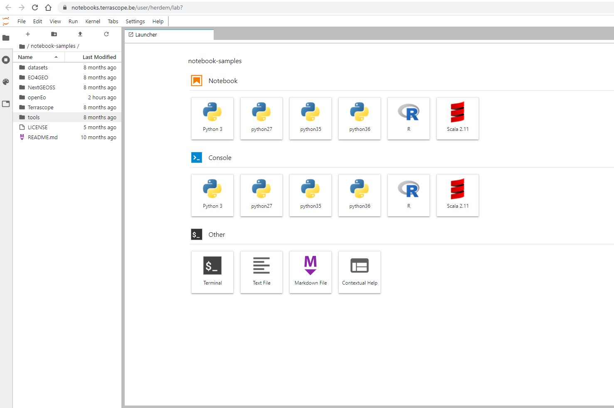

Terrascope provides two virtual environments with necessary tools and data so that you can start coding immediately.
In this training, we will focus on the Notebooks.
Once you login, you will land on the home page:
Let's start with a warm up exercise first and visualize a Sentinel-2 product
Before diving into code, let's have a look at the web services that are provided by Terrascope
TBA
TBA
TBA
TBA
Phenology is an important supporting parameter of vegetation that can be derived from remote sensing data. It allows for instance to evaluate crop conditions in agriculture, or vegetation/crop type mapping and is an indicator for climate change. In this case, phenology is defined by:
Start of season, a date and the corresponding value of the biophysical indicator End of season, a date and the corresponding value of the biophysical indicator Deriving phenology accurately, requires a sufficiently dense vegetation index time series for a given pixel or area. At the same time, sufficiently high spatial resolution is needed, to avoid noise from sampling heterogeneous areas in a pixel or area. For time series analysis, high spatial accuracy is also an important requirement. Today, no single sensor can really satisfy all these requirements, limiting the accuracy of the predicted phenology parameters. In this use case, we will use openEO's capability to easily merge multiple datasets with different resolutions. Concretely we will use:
ProbaV 10-daily composites: low spatial resolution (300m), but high temporal resolution Sentinel-2: high spatial resolution (10m), low temporal resolution Sentinel-1 Gamma0: high spatial \& temporal resolution, but no direct link to phenological parameters This study will demonstrate the multi sensor data fusion approach is to merge the above data into a single dense vegetation index time series. This is provided as input to a phenology algorithm, implemented as a User-Defined Function (UDF), so that it can be easily replaced with other implementations.